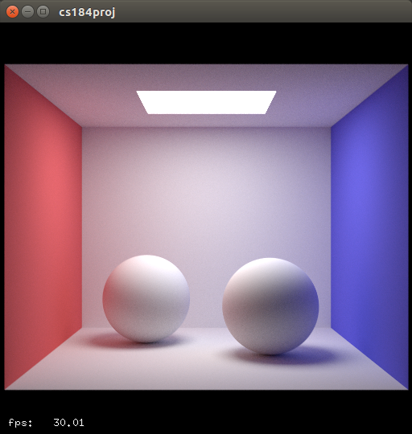
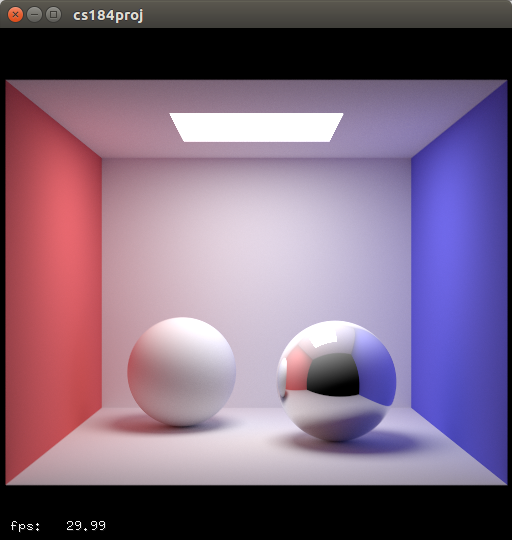
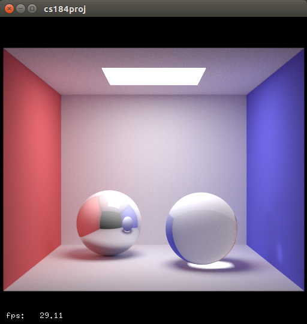
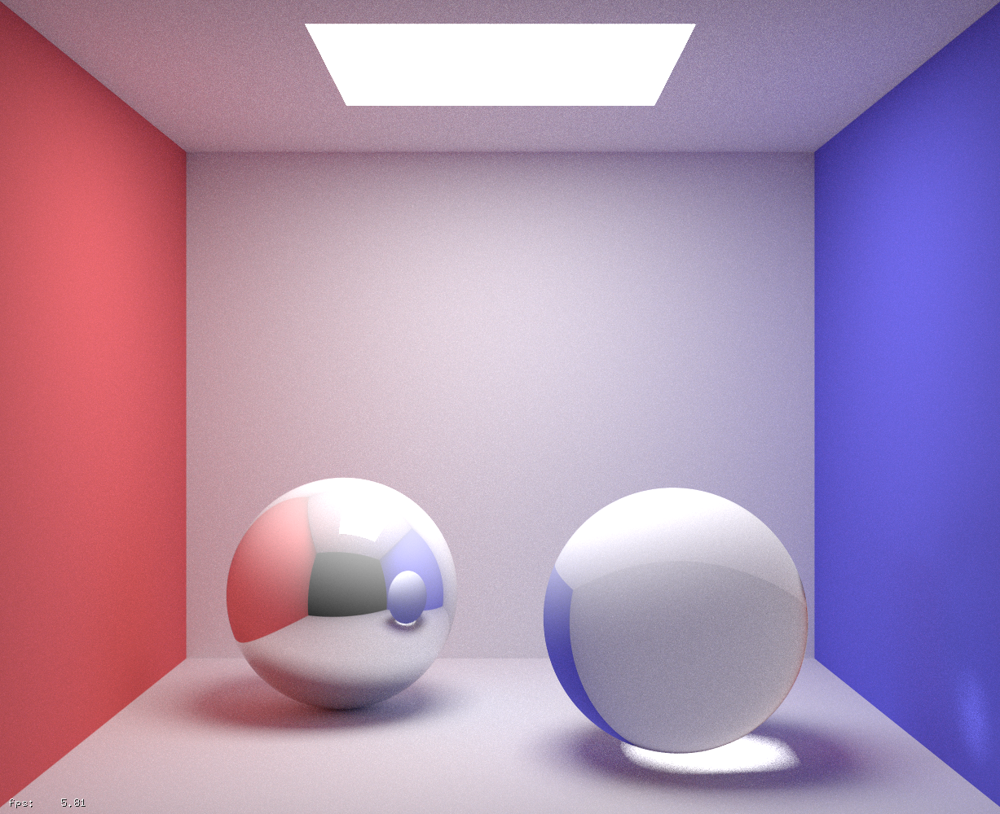
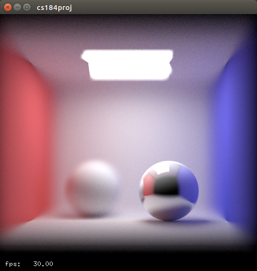
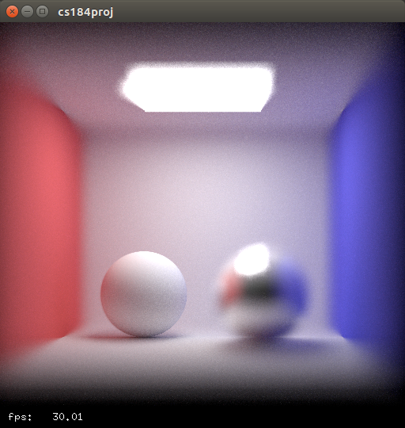

CS184 Final Project
Update
Summary Video
Summary Slides
Currently our GPU ray tracer supports the following.
Diffuse surfaces
Mirror surfaces
Glass surfaces
Pinhole camera
Thin lens camera
Sphere primitives
Mesh primitives
Real time scene re-rendering
Importance sampling area light
BVH
Adaptive sampling
We worked heavily off of the nvidia optix tutorial optixPathTracer, which set up a basic rectangular cornell box with diffuse surfaces and already included adaptive sampling, re-rendering, simple global BVH, and a pinhole camera. We added mirror and glass surfaces, a thin lens camera, sphere and mesh primitives along with their respective BVH's. We also supported loading meshes, borrowing heavily from another optix tutorial. However, a lot of work was done to get meshes to support our surfaces, since the default texture for meshes is the blinn phong model. Some of the pictures we managed to render are shown below.
|

Basic diffuse spheres cornell box.
|
|

Including mirror material.
|
|

Including glass material.
|
|

High resolution image which would not be possible using proj3-2.
|
|

Lens focused on closer sphere.
|
|

Lens focused on further sphere.
|